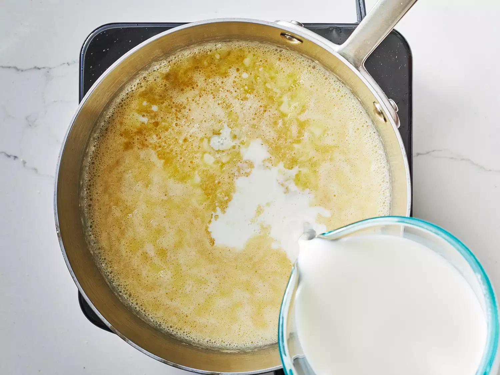

CONTACTS >
PASTA >
RECIPES >
Simple MAC & CHEESE Recipe

How to Make Macaroni and Cheese on the Stovetop
you start by boiling 2 cups of raw c-shape macaroni
tip:add a teaspoon of oil to the water to reduce the stickness of the macaronies
on a low medium heat place a pot and add to it :
Second
Place a pan and add to it :
- one cube of butter
- 1/2 cup of milk
- 2 teaspoons of flour keep mixing them together
- 2 handful mozzarilla cheese
- one cube of maggi

dry the macaroni from the water before adding a teaspoon of butter
and a 1/4 teaspoon of salt and pepper then you can add it to the orange sauce pot AND YOURE DONE !

Bon Apetit !
Mac and Cheese Add-Ins
you can add some of the following recommendations on your plate to bring some spice into it
- Garlic Powder
- White Cheddar
- diced chicken and broccoli
because your reviews is important to us to continue !